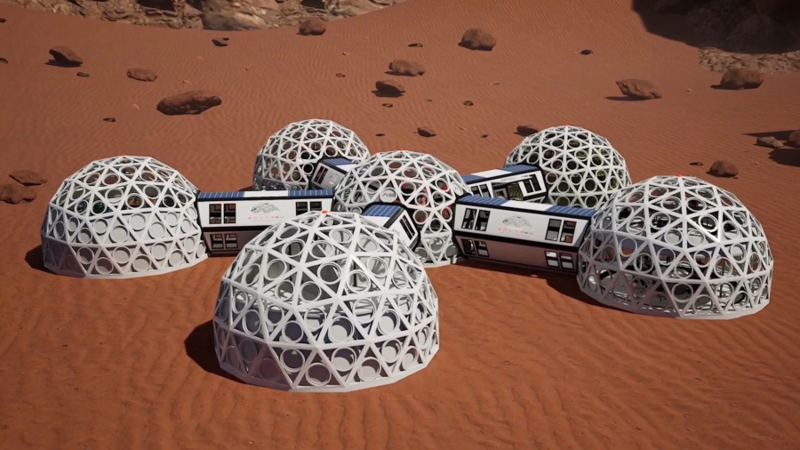

Los restos oxidados de una estación de investigación abandonada. Nadie sabe qué ocurrió con su tripulación, pero los paneles solares aún giran lentamente, como esperando el regreso de alguien que nunca volvió.